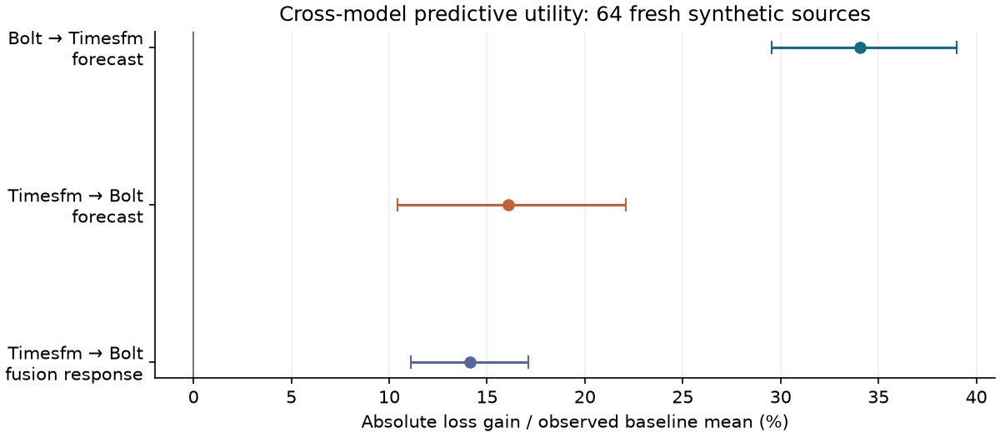
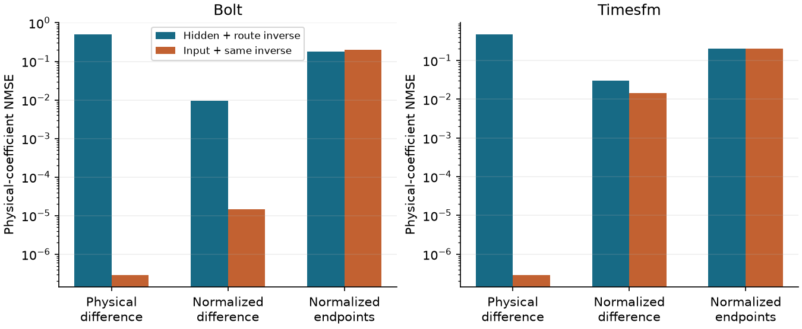
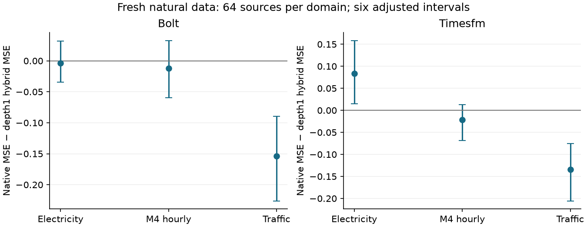
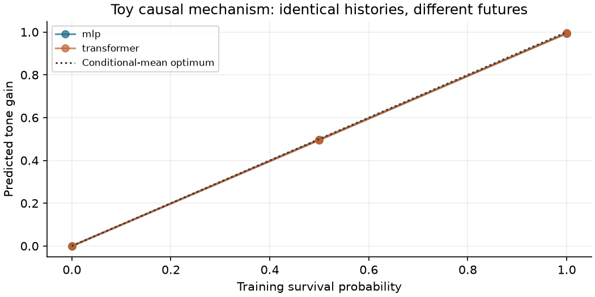
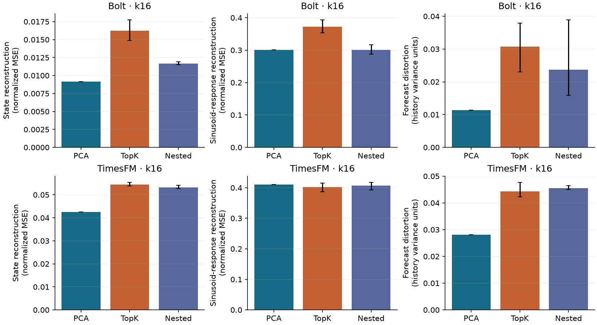

Comparison has bounded predictive value
All three frozen primary contrasts replicated. The intervals resample 64 source seeds and adjust for three comparisons; five conditions within each seed are dependent. The probes were fitted on 20 earlier FIT sources. Hidden means input plus the other model’s hidden states; Forecast uses its forecast instead; Both uses both.

For forecast targets, input plus source forecast outperforms input plus source hidden states. Adding hidden states to the forecast is an exploratory positive. This demonstrates finite-data predictive usefulness in these conditions, not shared feature meanings, new information beyond the exact input, or cross-model causal mediation. The exploratory generic-feature control below narrows this result substantially. The earlier pilot also had mixed or negative real-data and failure-prediction endpoints; the successful replication concerns these particular synthetic targets.
A decoder can manufacture apparent difficulty
On eight reused pilot backgrounds, correctly normalized targets and inverse transforms greatly improve early-activation decoding. The normalized-difference inverse uses observed background Fourier coefficients and history statistics. Every matched control receives the same inverse information. This is not a hidden-only information claim.

The endpoint route avoids the explicit background-coefficient correction and gives mixed hidden-versus-input results. Strong decodability does not establish causal semantics; poor decoding by one parameterization does not establish that information is absent.
Limited Fourier separation helps one real-data cell and hurts two
The frozen depth1 rule extracts a sufficiently stable, prominent tone from history, continues it analytically, and asks the native model to forecast the residual. It can abstain. Errors are MSE after standardizing each series by its own available history. On 192 fresh sources, TimesFM electricity MSE falls from 0.552 to 0.468; its paired gain interval excludes zero after six-comparison adjustment. Bolt electricity is inconclusive. Traffic deteriorates in both models. M4 is inconclusive.

A seasonal24 baseline has lower electricity mean MSE (0.399), although its paired difference from the TimesFM hybrid is uncertain. Thus the positive hybrid result establishes a bounded model limitation, not a better forecasting method. The selector misses some gains but no longer rejects all of them. Source resampling is conditional on these datasets and shared calendar periods; public-source overlap with pretraining remains unknown.
Projection onto the history-fitted tone plane attributes 0.0351 of the TimesFM electricity gain to that plane and 0.0488 outside it. Residual forecasting changes more than the peeled frequency. This is an exact error partition, not identification of the true future components.
A chronological real-data holdout gives a negative result
October 2026 temperatures from eight predetermined airports postdate the exact cached model revisions. Thirty complete forecast windows remain after excluding two missing futures; every station receives equal weight. The frozen depth1 hybrid worsens both observed mean errors. It accepts 18 histories and abstains on 12.
These are genuinely later observations, although locations and climate patterns may be familiar to the models. Shared weather limits station independence, so intervals are descriptive. Archived observations are not a real-time vintage, and null quality flags mean unflagged rather than verified QC completion. The result limits the generality of the electricity positive; it does not show that real data are structureless.
Normalization does not explain the real-data split
Keeping the full-history normalization fixed while forecasting the peeled residual retains the TimesFM electricity gain: normalized MSE is 0.551575 natively, 0.467636 with ordinary peeling and 0.469563 with fixed normalization. The small difference between the two hybrids is uncertain, not an equivalence result.
On the later weather observations, fixed normalization worsens Bolt’s hybrid mean from 0.654730 to 0.843145 and changes TimesFM’s from 0.506455 to 0.476327, an uncertain improvement still above its native 0.450347. Neither yields a general repair. Forward and inverse normalization were locked together, so their contributions are not separated. Historical batch-versus-singleton numerical drift in the electricity replay was measured and bounded; source gain signs were unchanged.
How to read the comparison intervals
The first plot rescales paired absolute-gain intervals by the observed baseline mean. These are not bootstrap intervals for a percentage ratio. The underlying source-level absolute-gain contrasts determine the primary decisions.
Generic features explain part of the comparison result
On reused replication sources, both random-feature families beat Bolt hidden states for predicting TimesFM forecasts. For predicting Bolt forecasts from TimesFM, random ReLU features are competitive while random Fourier features lose to trained states. Trained TimesFM states retain an advantage for predicting Bolt’s activation-fusion response: loss 0.002074 versus about 0.002248 for either random-feature family, conditional on input and source forecast. The controls match feature budgets and selection procedures, not architectures or FLOPs; this follow-up is exploratory.
A specific comparative advantage survives a fresh test
With 20 new FIT and 32 untouched TEST sources spanning five amplitude/frequency conditions, locally refitted TimesFM hidden-state probes predict Bolt’s fusion response with loss 0.002255. The matched random Fourier and ReLU controls give 0.002963 and 0.002445. Both trained-feature reductions (23.9% and 7.75%) pass the frozen 5% threshold and positive family-adjusted source intervals.
Excluding the anchor condition descriptively reduces the trained-hidden advantage over random ReLU to 3.58%, with an interval crossing zero. Old probes transferred without refitting perform substantially worse on shifted conditions. This supports bounded feature efficiency. Predicting a fusion response also does not show that fusion improves the forecast: the fresh anchor condition deteriorates for both models.
Wrong responses can still have a simple structure
Across 16 fresh backgrounds and four crossed phases, local curvature usually shrinks with input distance. That does not make the response correct. A two-coordinate sine/cosine map fitted on the other 15 sources explains part of the weak-tone response, especially Bolt at period19.2. The per-source map is an optimistic explanatory ceiling fitted on the same phases.
These scores predict the model’s response, not the true future. Phase-table errors are normalized by ideal injected-sinusoid energy, not by observed model-response energy. Four phases and one amplitude cannot characterize an entire response surface. Off-frequency changes, nonlinear even responses and background dependence remain. The reused-source intervals are exploratory; source-held-out fitting is not a new confirmatory dataset.
The phase structure survives fresh backgrounds
On 16 new backgrounds, the frozen period19.2 map predicts responses better than an old-fitted scalar attenuation model. Both models retain positive paired gain intervals after four-comparison adjustment. A simple gain-plus-phase map performs similarly to the full two-coordinate map.
The oracle is fitted on the same fresh responses and is only an explanatory ceiling. All predictive coefficients come from old sources. Intervals condition on the four equally weighted background types; changing their mixture may change the conclusion. Substantial unexplained error remains, especially for TimesFM.
Phase transfer extends beyond the fitted phase axes
Eight additional oblique phases on the same 16 transfer backgrounds retain the full-map advantage over attenuation: mean normalized error reductions are 0.2482 for Bolt and 0.1845 for TimesFM, with adjusted source intervals above zero. No predictive coefficients were refitted. These are fresh phase inputs, not new independent backgrounds.
A saved-array output-frequency comparison explains a little more of the period19.2 response. Old-source selection favors output period24 for Bolt and22 for TimesFM, but trend controls change the Bolt selection and weaken the TimesFM result. More flexible waveform templates do better still. Short windows, nuisance choices and source variation prevent identifying a unique internal oscillator or frequency-snapping mechanism.
Longer forecasts retain distortion even for strong tones
A Bolt-only direct64-head test reuses the 16 OLD FIT and 16 transfer TEST backgrounds. OLD-source selection favors a 22-step output period for 19.2-step inputs at both weak and strong amplitude over 64 steps. Matched DC/trend controls agree there; all period24 controls retain24. Every displayed frequency-map gain has a positive family-adjusted source interval.
These errors predict model responses, normalized by ideal injected-tone energy. They are not forecast improvements. Amplitude changes normalization as well as signal dominance. Horizon-dependent selections, nonlinear even responses and the finite candidate grid prevent identifying a unique oscillator, training prior or patch mechanism.
The first capture failed a historical replay comparator that changed batch geometry; its missing numerical delta is preserved as a limitation. A four-case replay diagnostic and outcome-blind amendment precede this recovery. Current64/current32 prefixes match exactly on identical queries and use one model forward. Audited historical rebatching NMSE drift is at most 1.91×10⁻⁶, far smaller than these gains; 1,210 score/replay and 1,544 roundoff checks pass.
Separate frontend jumps from internal roughness
Chronos-T5 has a discrete tokenizer: tiny raw changes can cross a token boundary. The fresh paired 16-source tiny/small-checkpoint test finds one-token jumps at about 4.84×10⁻⁹ input RMS, with finite encoder and next-token distribution changes. Within the continuous embedding space, trained probability curvature decreases from the largest to smallest tested radius on all 16 sources in both models. This identifies one source of jaggedness without claiming every internal direction is smooth. Random-model softmax curvature is below the numerical-resolution gate and is excluded.
For Bolt and TimesFM, a separate nine-quantile experiment finds that other quantiles and central summaries do not resolve the weak-tone response errors. Even a best-quantile oracle leaves large errors. That makes a median-only explanation inadequate in the tested conditions; it does not establish poor probabilistic calibration.
A continuation prior is possible, but insufficient as a full explanation
Matched tiny-model training changes only future tone survival probability. Both architectures learn approximately the conditional-mean gain. This establishes a possible mechanism in toy MSE training; it does not identify pretrained-model training. The actual native outputs studied here are medians. Their API names should not be mistaken for the prediction functional.

Random initialization already permits tone decoding, so decodability alone does not show a learned concept. In the pretrained pilots, even the best fitted conservative scalar leaves large weak-tone errors. Phase and off-frequency changes remain. Some off-frequency changes align with the background forecast, including under fixed normalization, but that template is also incomplete.
The training loss changes the interpretation of attenuation
In 24 matched tiny-model arms, a 25% chance of tone survival produces gains near 0.25 under squared loss but near zero under absolute loss (median training). At 75%, the corresponding gains are near 0.75 and 0.98. At exactly 50%, an interval of marginal medians is optimal; different partial gains can be similarly good. These controlled mechanisms prevent reading a survival probability directly from a pretrained median forecast.
Actual neurons can be useful without an SAE
The direct-feature pilot captures post-activation FFN neurons, rather than treating residual coordinates as neurons. It uses five equal-energy perturbation types, FIT-only feature selection and source-held-out evaluation. This illustrative early-layer, four-feature RMS slice is selected from the full registered table; its eight synthetic TEST sources support an exploratory comparison.
Bolt’s native coordinates are more selective than these rotations; TimesFM shows no corresponding advantage here. Input coordinates already identify the intervention well. Different layers and pooling rules give different results. This is perturbation selectivity, not proof that neurons have one meaning generally. Rotations are structured rather than Haar, and PCA has a different candidate count. Causal testing of the selected units is a separate stage.
Classifier selectivity did not yield substantial selective response removal
The small causal pilot suggested a relative advantage for four FIT-selected early Bolt neurons. A larger 32-source test crossed four frozen activity-matched control sets with every source. The advantage did not replicate: signed target-response removal differed by 0.000312, with a 95% source interval from −0.00693 to 0.00734. Selected signed removal before subtracting controls was 0.000834, also uncertain and practically small under the predeclared ±0.02 descriptive band.
All 160 selected edits were nonzero and affected outputs. Their target-edit energy after the down-projection was 2.72 times the mean control energy. Thus the result concerns aligned response removal, not a failure to intervene or an absence of all output effects. It bounds this chosen four-unit edit; it does not rule out larger groups, other layers or other features.
Good state reconstruction can hide poor weak-response fidelity
The matched dictionary pilot compares native axes, rotations, adaptive sparse PCA, TopK and a nested-prefix variant inspired by Matryoshka SAEs. All use measured activity budgets; stochastic methods have three initializations. Error bars below show the initialization range, not confidence intervals. State error is normalized by FIT-centered state energy; hidden-response error is sourcewise response-energy-normalized. Both use 32 TEST sources, half synthetic. Forecast distortion is normalized by history variance over 20 receivers, only four synthetic. Different denominators and source weighting prevent direct comparisons between columns.

PCA is competitive and often preserves forecasts better; TimesFM k8 is an exception where TopK beats PCA. There is no uniform SAE winner. PCA uses a full FIT basis and input-dependent top-k support, not a fixed rank16 subspace. Nested training uses about 1.25 times the dense forward-matmul work at equal steps and parameters.
A static position-conditioned FIT mean explains 80.3% of Bolt’s global-mean-relative state error and 10.1% of TimesFM’s. It cannot respond to changing inputs, and it does not explain all PCA gains. Compression, responsiveness and semantic interpretability remain distinct.
The audit marks 2,048 of 3,520 causal response cells with invalid or inapplicable random controls, including zero-edit cases, as unscorable. Exact base replay finds 119 of 120 TimesFM TopK-k8 edits are zero. Cached perturbed-state proxies are kept separate from unsaved singleton branches. These cells cannot support a claim that the features are harmless. Fallback copies are excluded from null evidence. Independently sampled plus/minus edits are not calibrated smooth-response nulls, even when individual geometries are valid. The valid reconstruction and saved-difference results remain useful; a separate response-aware objective pilot tests the mismatch directly.
The measuring dictionary can introduce apparent jaggedness
On 16 saved synthetic backgrounds, frozen sparse PCA, TopK and nested dictionaries at k8/16 amplify actual-path chord roughness. The table gives the ratio of source-mean decoded chord RMS to source-mean raw-state chord RMS; ranges span the six fixed method/budget choices, not uncertainty intervals.
Isolating each dictionary on a straight activation chord retains substantial roughness. Identity and fixed-first-k linear PCA give zero at numerical precision. Nonzero active-support switching coincides with resolved dictionary curvature; it can include ReLU zero crossings or changes in TopK membership. This first audit does not separate those contributions. All 24 sparse-arm means exceed their raw counterparts, although individual paths need not.
The isolated interpolation is off-manifold, and raw model states also have nonzero curvature. Compression changes reconstruction error and response magnitude. This is a control against attributing every feature discontinuity to the model, not proof that a smoother dictionary is more semantic. FP64 dictionary arithmetic, absolute errors and stricter resolution floors support the measured distinction.
Holding feature membership fixed isolates the source of those jumps
With the same weights and locked-normalization paths, freezing the k16 selected indices at each actual midpoint removes over 99% of mean actual-path chord RMS. Leaving ReLU active or freezing its central gate gives identical saved-path metrics here, isolating changes in TopK membership.
Response error here is hidden-state endpoint-minus-midpoint reconstruction RMS, not output or forecast error. It improves on every source in each model/method cell. State reconstruction changes little and worsens slightly in five of six means. The support is chosen locally for each path: this is a controlled diagnosis, not a deployable global encoder. No native inference or new fitting was used.
Changing the SAE objective preserves different information
A paired-response reconstruction loss substantially improves small-response fidelity in a matched Bolt TopK-k16 pilot. Both arms use the same initialization, batches, 500 steps and computed branches. Lambda0 uses ordinary state reconstruction; lambda1 adds FIT-scaled sinusoid/noise difference reconstruction.
All four columns are normalized MSE, with different denominators: State uses FIT-centered state energy; Sinusoid and Noise average sourcewise error-to-response-energy ratios; Focused averages four dependent cell ratios within each source, then sources. The columns are not directly comparable. Response gains hold on all 32 old TEST sources and all 16 focused sources with held-out directions/phases. Global reconstruction worsens. This one-seed descriptive pilot demonstrates an objective-dependent tradeoff, not monosemantic features or improved forecasting. The focused bank is excluded from fitting and selection. Native reinsertion is evaluated separately; this simplified objective is inspired by response consistency, not a reproduction of TSAE.
Better hidden-response fidelity does not guarantee better output fidelity
Reinserting the frozen reconstructions into Bolt gives a mixed result. Baseline distortion uses 20 existing receivers and history variance as its denominator; paired-response NMSE uses 15 existing receivers and each native output response’s energy. These are different cohorts and quantities.
Lambda1 improves on 12/15 sinusoid and 11/15 noise receivers, but adverse cases make the primary source-average errors 30.2% and 23.4% worse. PCA has the lowest mean in all three columns. No response denominator falls below the recorded floor.
Aggregation matters: pooling noise response energies instead of averaging sourcewise ratios reverses that contrast, from 0.537 to 0.274. This sensitivity is reported without replacing the primary metric. Baseline mean distortion also improves despite only 3/20 individual gains. Nine exact independent forecast replays, identity/restoration gates and 792 arithmetic checks pass. These results concern preservation of native behavior, not prediction accuracy against real futures.
The saved-array follow-up confirms hidden-response improvement on all 15 actual singleton sources, including the adverse output cases. Two low-response synthetic series dominate sine deterioration; two real series dominate noise deterioration. Noise error normalized by history variance nearly doubles, so its adverse tail is not merely a small-denominator artifact. Most net NMSE deterioration is orthogonal to the native response. Raw pooled energy also depends on measurement units: after history normalization, pooled noise error worsens from 0.513 to 1.010. Removing the worst cases reverses the means, but no sources are excluded from the primary result. This identifies a hidden/output fidelity mismatch without identifying a downstream Jacobian mechanism.
Direct features and modern SAE designs
The direct-coordinate/PCA/rotation/TopK/nested-dictionary experiment tests whether an SAE adds value. Residual coordinates are not post-activation feed-forward neurons. Reconstruction, actual activity, source-held-out probes, seed stability and native forecast preservation must be considered together. Low reconstruction error alone is insufficient. The artifact index records whether each stage actually completed.
- Superposition Is Not Necessary: Narrow PatchTST feed-forward-neuron study; not a blanket finding about pretrained residual streams.
- TSAE: Structured temporal and variable-aware SAE design; univariate pilots do not reproduce its multivariate routing.
- Matryoshka SAEs: Nested dictionaries motivate a compact coarse/fine comparison; our simplified variant is labeled inspired-by.
- BatchTopK: Motivates activity-aware comparisons and a frozen inference threshold, rather than comparing nominal k alone.
- Dissecting Chronos: Model-specific feature interventions motivate causal controls; results on Chronos-T5 do not automatically transfer to Bolt.
- Chronos: Discrete scaling and quantization motivate separating frontend discontinuities from encoder behavior.